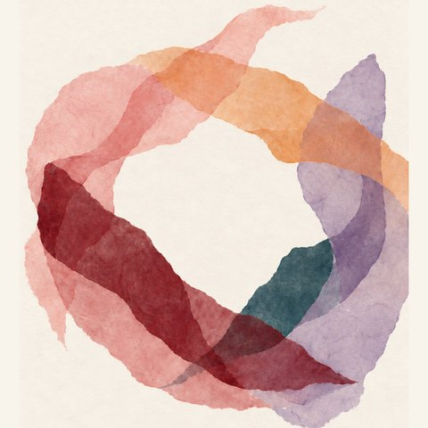

When the work was made
Loading map…
Scroll or pinch to zoom. Small countries are shown as dots.

Love Manifesto
A love poem, song or story from every country in the world. Choose a country on the map to find its love poem, song or story.Choose a country to find its love poem, song or story.
When the work was made
Loading map…
Scroll or pinch to zoom. Small countries are shown as dots.